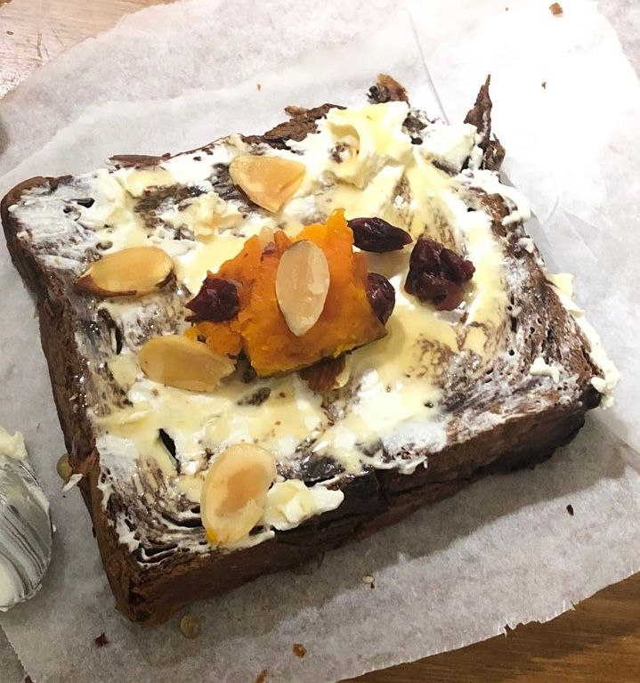

사실 집에 동생이 혼자 있다고 해서 본가에 잠깐 있다 왔어욤
지금의 나는 혼자 있는 것도 좋아하는데, 옛날에는 혼자 있는 걸 딱히 좋아하진 않았던 것 같아요
그렇다고 친구가 많은 성격도 아니었어서 친구 많고 말도 잘하고 그런 친구들이 부러웠어요😀
근데 확실히 성격이 많이 밝아진 것 같아요!!
밝은 사람들이랑 지내서 그런가
혼자 있는 걸 좋아하긴 하지만 옆에 멤버들 있다가 없으면 혼자 있는 게 허전할 때가 많아요ㅋㅋ
그래서 가끔 나는 혼자 있는 걸 좋아하는 건가? 아님 그냥 익숙해졌던 건가 고런 생각이 들더라구요
뭐 그런 날도 있고 아닌 날도 있는 거겠죠?!
이야기가 어쩌다 여기까지..?
암튼 그래서 오늘은 스케줄도 없겠다 본가에서 쉬었어요!
아침엔 동생 학교 가기 전에 토스트 만들어줬는데 아주 잘 먹어줘서 기분이 좋았어요😊
평소에 좋은 언니가 아니라..ㅎㅎ
오랜만에 좀 따뜻한 언니인 척 해봤어요
잘 나가다가 중간에 잔소리 초큼 해버렸지만..
아침에 동생 가고 이호한테 프메 보내고 바로 자려고 했는데
반 정도 남은 책 좀 궁금해서 그냥 읽고 잤어요!!
요즘 책 거의 못 읽었는데 오랜만에 읽으니까 좋더라구요
읽고 잤더니 상쾌ㅎㅎ📚
벌써 저녁이네요!!
이호는 오늘 하루 잘 보냈어요?
아 이건 동생이 찍은 토스트!!

사진이 좀 늘었더라구요?